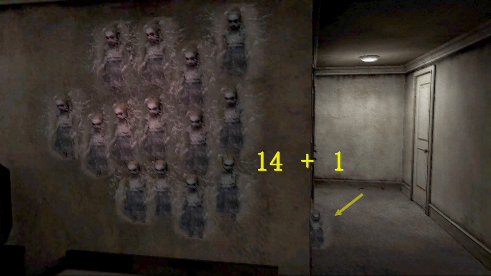
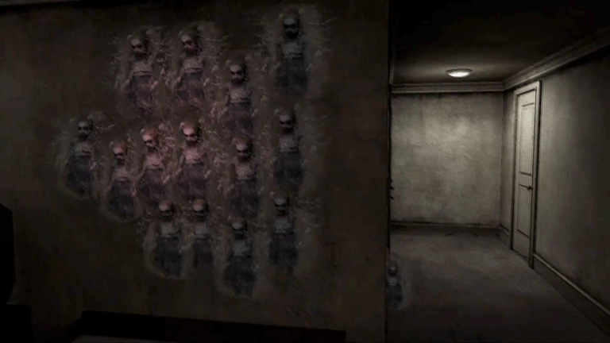
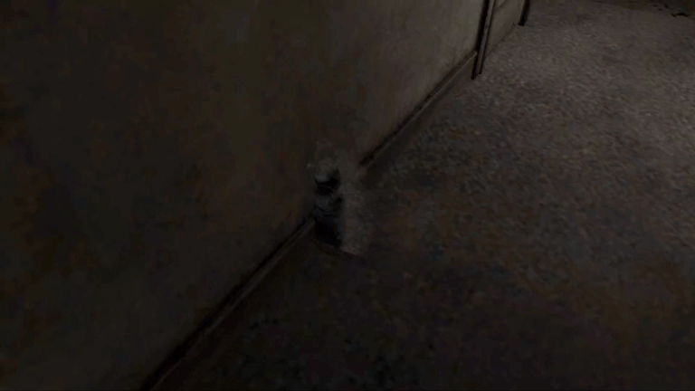
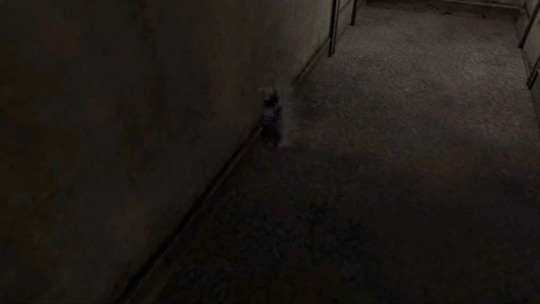

[SH4] How to Reproduce the Doll in the Hallway

The Doll in the Hallway
![[SH4] How to Reproduce the Doll in the Hallway](img/da05.png)
This is a mirror of the DeviantArt version linked above, provided as a backup and for easier access.

⚠️Spoilers,
It's well known that if you put the Shabby Doll you get from Walter into the item box, 15 of them will appear on the wall. But every now and then, one of them(?) shows up in a different place.

The phenomenon seems to be a glitch (according to the trusted @roocker666), but it can be manually reproduced—not always, but reliably enough. Here are my notes.
Of course, sometimes it can appear on the first try during normal play.


1. Leaving all the room hauntings untouched might help, but I'm not sure it's required.
2. Once the 15 wall dolls appear, save the game. Then keep going in and out of the hole and the bedroom until a hallway doll shows up.
Don't just pop in and out immediately. Wander a bit in the Otherworld, move between doors, or maybe defeat a Monster or two.
3. If the wall dolls disappear before the hallway one spawns, reload your save and repeat the process.
That's it!
It's random, so sometimes it takes forever, but the steps themselves are simple. I've seen it multiple times, and it worked both on the Japanese PS2 version and GOG, so it should be reproducible elsewhere too.
Since it's just a room haunting, it doesn't depend on difficulty, endings, or anything like that.